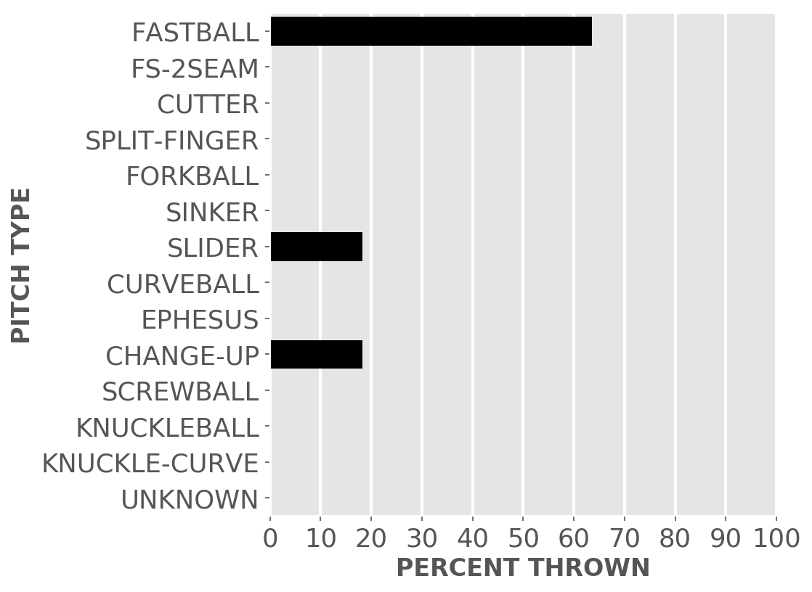
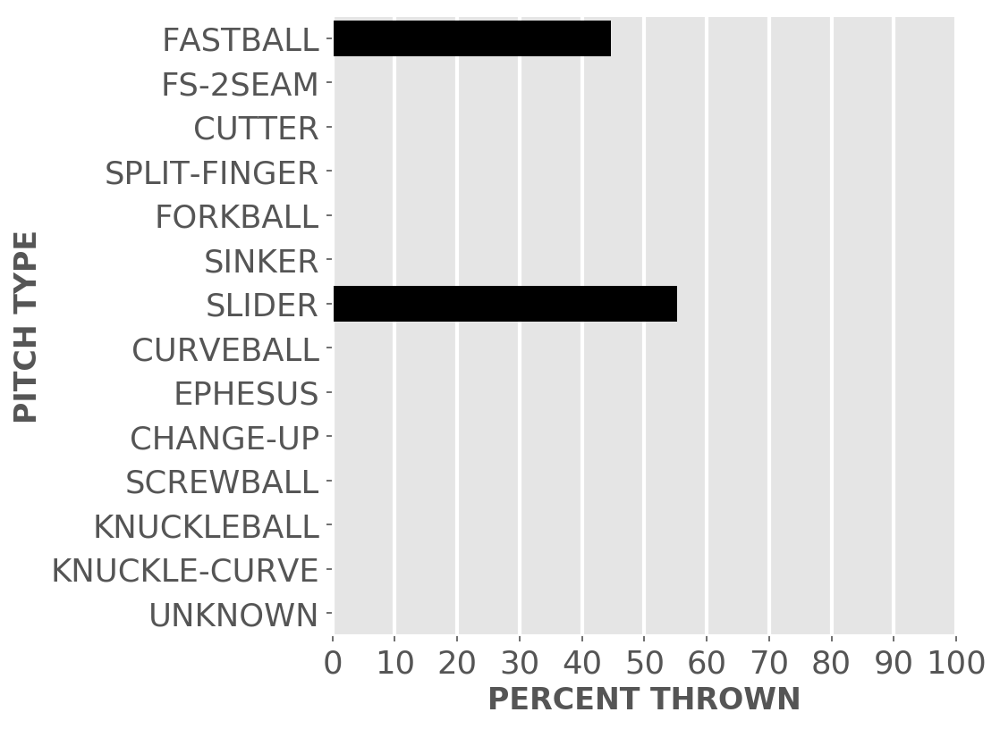

Chicago baseball
White Sox
A little-more-than-casual but not-very-wonky statistical look at the current season
Great expectations for the good guys in black.
Updated Monday, May 9, at 4:49 p.m. Pybaseball gathers these from Baseball-reference.com.
Games
JUMP TO TOP | BATTERS | PITCHERS
On Sunday, May 8, the Sox won a night game at the Red Sox, 3 to 2, in 9 innings. The winning pitcher was Keuchel, losing pitcher was Houck. Save: Sousa.
Next scheduled game: Monday, May 9, a game at home with the Guardians.
Summary results by team
| Team | Wins | Loses | Avg. Sox runs | Avg. runs against |
|---|---|---|---|---|
| Angels | 2 | 2 | 3.25 | 2.75 |
| Cubs | 2 | 0 | 3.5 | 2.0 |
| Guardians | 0 | 3 | 1.67 | 6.33 |
| Mariners | 2 | 1 | 3.33 | 3.67 |
| Rays | 2 | 1 | 3.0 | 4.33 |
| Red Sox | 3 | 0 | 3.33 | 1.67 |
| Royals | 1 | 2 | 3.0 | 4.67 |
| Tigers | 2 | 1 | 6.33 | 2.67 |
| Twins | 0 | 3 | 2.33 | 5.67 |
Batters
JUMP TO TOP | GAMES | PITCHERS
Click the link under a player's name to get up-to-speed on a player at bat.
Jose Abreu #79, 1B
| Status (A = active) | A |
| Bats/Throws | R/R |
| Plate appearances | 109 |
| At bats | 96 |
| Hits | 23 |
| Home runs | 3 |
| Batting Avg. | 0.24 |

| Runs | 15 |
| RBI | 12 |
| On-base percent | 0.321 |
| Weighted OBP | 0.319 |
| Slugging % | 0.385 |
| Stolen bases | 0 |
| Caught stealing | 0 |
Other measures
| Weighted runs above avg. (wRAA) | 1.2 |
| Runs Above Replacement (RAR) | 3.4 |
| Fielding RAR | 1.2 |
| Wins above replacement (WAR) | 0.4 |
Tim Anderson #7, SS
| Status (A = active) | A |
| Bats/Throws | R/R |
| Plate appearances | 96 |
| At bats | 92 |
| Hits | 31 |
| Home runs | 4 |
| Batting Avg. | 0.337 |

| Runs | 15 |
| RBI | 9 |
| On-base percent | 0.365 |
| Weighted OBP | 0.393 |
| Slugging % | 0.522 |
| Stolen bases | 4 |
| Caught stealing | 0 |
Other measures
| Weighted runs above avg. (wRAA) | 6.4 |
| Runs Above Replacement (RAR) | 9.6 |
| Fielding RAR | -2.2 |
| Wins above replacement (WAR) | 1.0 |
Jake Burger #30, 3B
| Status (A = active) | A |
| Bats/Throws | R/R |
| Plate appearances | 77 |
| At bats | 71 |
| Hits | 17 |
| Home runs | 2 |
| Batting Avg. | 0.239 |

| Runs | 6 |
| RBI | 7 |
| On-base percent | 0.276 |
| Weighted OBP | 0.281 |
| Slugging % | 0.352 |
| Stolen bases | 0 |
| Caught stealing | 0 |
Other measures
| Weighted runs above avg. (wRAA) | -1.4 |
| Runs Above Replacement (RAR) | 1.4 |
| Fielding RAR | -0.1 |
| Wins above replacement (WAR) | 0.1 |
Adam Engel #15, CF
| Status (A = active) | A |
| Bats/Throws | R/R |
| Plate appearances | 59 |
| At bats | 54 |
| Hits | 12 |
| Home runs | 0 |
| Batting Avg. | 0.222 |

| Runs | 5 |
| RBI | 1 |
| On-base percent | 0.288 |
| Weighted OBP | 0.275 |
| Slugging % | 0.315 |
| Stolen bases | 3 |
| Caught stealing | 0 |
Other measures
| Weighted runs above avg. (wRAA) | -1.3 |
| Runs Above Replacement (RAR) | -0.1 |
| Fielding RAR | -0.6 |
| Wins above replacement (WAR) | 0.0 |
Leury Garcia #28, CF
| Status (A = active) | A |
| Bats/Throws | S/R |
| Plate appearances | 69 |
| At bats | 66 |
| Hits | 12 |
| Home runs | 2 |
| Batting Avg. | 0.182 |

| Runs | 6 |
| RBI | 6 |
| On-base percent | 0.203 |
| Weighted OBP | 0.23 |
| Slugging % | 0.318 |
| Stolen bases | 1 |
| Caught stealing | 0 |
Other measures
| Weighted runs above avg. (wRAA) | -3.9 |
| Runs Above Replacement (RAR) | -2.2 |
| Fielding RAR | -1.7 |
| Wins above replacement (WAR) | -0.2 |
Yasmani Grandal #24, C
| Status (A = active) | A |
| Bats/Throws | S/R |
| Plate appearances | 96 |
| At bats | 81 |
| Hits | 14 |
| Home runs | 1 |
| Batting Avg. | 0.173 |

| Runs | 2 |
| RBI | 6 |
| On-base percent | 0.292 |
| Weighted OBP | 0.249 |
| Slugging % | 0.235 |
| Stolen bases | 1 |
| Caught stealing | 0 |
Other measures
| Weighted runs above avg. (wRAA) | -4.0 |
| Runs Above Replacement (RAR) | -0.1 |
| Fielding RAR | 0.9 |
| Wins above replacement (WAR) | 0.0 |
Josh Harrison #5, 2B
| Status (A = active) | A |
| Bats/Throws | R/R |
| Plate appearances | 61 |
| At bats | 55 |
| Hits | 8 |
| Home runs | 0 |
| Batting Avg. | 0.145 |
| Runs | 7 |
| RBI | 2 |
| On-base percent | 0.23 |
| Weighted OBP | 0.227 |
| Slugging % | 0.255 |
| Stolen bases | 0 |
| Caught stealing | 0 |
Other measures
| Weighted runs above avg. (wRAA) | -3.6 |
| Runs Above Replacement (RAR) | -0.5 |
| Fielding RAR | 1.0 |
| Wins above replacement (WAR) | -0.1 |
Eloy Jimenez #74, LF
| Status (A = active) | D10 |
| Bats/Throws | R/R |
| Plate appearances | 39 |
| At bats | 36 |
| Hits | 8 |
| Home runs | 1 |
| Batting Avg. | 0.222 |

| Runs | 2 |
| RBI | 7 |
| On-base percent | 0.256 |
| Weighted OBP | 0.262 |
| Slugging % | 0.333 |
| Stolen bases | 0 |
| Caught stealing | 0 |
Other measures
| Weighted runs above avg. (wRAA) | -1.2 |
| Runs Above Replacement (RAR) | -1.1 |
| Fielding RAR | -0.8 |
| Wins above replacement (WAR) | -0.1 |
Reese McGuire #21, C
| Status (A = active) | A |
| Bats/Throws | L/R |
| Plate appearances | 53 |
| At bats | 46 |
| Hits | 7 |
| Home runs | 0 |
| Batting Avg. | 0.152 |
| Runs | 3 |
| RBI | 3 |
| On-base percent | 0.18 |
| Weighted OBP | 0.161 |
| Slugging % | 0.174 |
| Stolen bases | 0 |
| Caught stealing | 0 |
Other measures
| Weighted runs above avg. (wRAA) | -5.7 |
| Runs Above Replacement (RAR) | -0.6 |
| Fielding RAR | 2.4 |
| Wins above replacement (WAR) | -0.1 |
Danny Mendick #20, SS
| Status (A = active) | A |
| Bats/Throws | R/R |
| Plate appearances | 26 |
| At bats | 23 |
| Hits | 5 |
| Home runs | 1 |
| Batting Avg. | 0.217 |
| Runs | 4 |
| RBI | 3 |
| On-base percent | 0.28 |
| Weighted OBP | 0.317 |
| Slugging % | 0.435 |
| Stolen bases | 0 |
| Caught stealing | 0 |
Other measures
| Weighted runs above avg. (wRAA) | 0.2 |
| Runs Above Replacement (RAR) | -0.2 |
| Fielding RAR | -1.4 |
| Wins above replacement (WAR) | 0.0 |
Luis Robert #88, CF
| Status (A = active) | A |
| Bats/Throws | R/R |
| Plate appearances | 80 |
| At bats | 77 |
| Hits | 21 |
| Home runs | 4 |
| Batting Avg. | 0.273 |

| Runs | 12 |
| RBI | 9 |
| On-base percent | 0.3 |
| Weighted OBP | 0.339 |
| Slugging % | 0.468 |
| Stolen bases | 5 |
| Caught stealing | 1 |
Other measures
| Weighted runs above avg. (wRAA) | 2.1 |
| Runs Above Replacement (RAR) | 6.6 |
| Fielding RAR | -0.3 |
| Wins above replacement (WAR) | 0.7 |
Gavin Sheets #32, 1B
| Status (A = active) | A |
| Bats/Throws | L/L |
| Plate appearances | 73 |
| At bats | 69 |
| Hits | 14 |
| Home runs | 1 |
| Batting Avg. | 0.203 |

| Runs | 4 |
| RBI | 3 |
| On-base percent | 0.247 |
| Weighted OBP | 0.239 |
| Slugging % | 0.275 |
| Stolen bases | 0 |
| Caught stealing | 0 |
Other measures
| Weighted runs above avg. (wRAA) | -3.6 |
| Runs Above Replacement (RAR) | -2.6 |
| Fielding RAR | -0.2 |
| Wins above replacement (WAR) | -0.3 |
Andrew Vaughn #25, LF
| Status (A = active) | D10 |
| Bats/Throws | R/R |
| Plate appearances | 60 |
| At bats | 53 |
| Hits | 15 |
| Home runs | 4 |
| Batting Avg. | 0.283 |

| Runs | 5 |
| RBI | 12 |
| On-base percent | 0.367 |
| Weighted OBP | 0.41 |
| Slugging % | 0.566 |
| Stolen bases | 0 |
| Caught stealing | 0 |
Other measures
| Weighted runs above avg. (wRAA) | 4.8 |
| Runs Above Replacement (RAR) | 2.2 |
| Fielding RAR | -4.0 |
| Wins above replacement (WAR) | 0.2 |
Pitchers
Click the link under a player's name to get acquainted with who's on the mound. Click here for a description of these stats and more.
Tanner Banks #57, P
| Status (A = active) | A |
| Bats/Throws | R/L |
| Wins | 0 |
| Losses | 0 |
| ERA | 1.29 |
| Caught stealing | 0 |
| Complete games | 0 |
| Shutouts | 0 |
| Saves | 0 |
| Blown saves | 0 |
Pitch types
Fastball = Four Seam and Unclassified Fastballs; FS-2seam = Two Seam Fastballs; Ephesuses are a really slow ball
| Average innings pitched | 1.8 |
| Strikeouts per 9 innings | 6.43 |
| Walks per 9 innings | 3.86 |
| Walks, hits per inning (WHIP) | 0.79 |
| Percent left on base | 81.8 |
| Percent first pitch strike | 57.7 |
Other measures
| Avg. run support | 5.0 |
| Opponents batting average | 0.109 |
| Batting avg. on balls in play | 0.139 |
| Fielding independent pitching | 2.93 |
| Win probability added (WPA) | 0.21 |
| Runs above replacement | 1.1 |
| WAR | 0.1 |
Aaron Bummer #39, P
| Status (A = active) | A |
| Bats/Throws | L/L |
| Wins | 0 |
| Losses | 1 |
| ERA | 4.91 |
| Caught stealing | 0 |
| Complete games | 0 |
| Shutouts | 0 |
| Saves | 1 |
| Blown saves | 1 |
Pitch types

Fastball = Four Seam and Unclassified Fastballs; FS-2seam = Two Seam Fastballs; Ephesuses are a really slow ball
| Average innings pitched | 0.9 |
| Strikeouts per 9 innings | 12.27 |
| Walks per 9 innings | 6.55 |
| Walks, hits per inning (WHIP) | 1.73 |
| Percent left on base | 66.3 |
| Percent first pitch strike | 50.9 |
Other measures
| Avg. run support | 1.0 |
| Opponents batting average | 0.256 |
| Batting avg. on balls in play | 0.37 |
| Fielding independent pitching | 4.26 |
| Win probability added (WPA) | -0.56 |
| Runs above replacement | -0.6 |
| WAR | -0.1 |
Ryan Burr #61, P
| Status (A = active) | A |
| Bats/Throws | R/R |
| Wins | 0 |
| Losses | 0 |
| ERA | 3.0 |
| Caught stealing | 0 |
| Complete games | 0 |
| Shutouts | 0 |
| Saves | 0 |
| Blown saves | 0 |
Pitch types

Fastball = Four Seam and Unclassified Fastballs; FS-2seam = Two Seam Fastballs; Ephesuses are a really slow ball
| Average innings pitched | 1.0 |
| Strikeouts per 9 innings | 12.0 |
| Walks per 9 innings | 9.0 |
| Walks, hits per inning (WHIP) | 1.67 |
| Percent left on base | 80.0 |
| Percent first pitch strike | 35.7 |
Other measures
| Avg. run support | 0.0 |
| Opponents batting average | 0.182 |
| Batting avg. on balls in play | 0.286 |
| Fielding independent pitching | 3.41 |
| Win probability added (WPA) | 0.1 |
| Runs above replacement | 0.1 |
| WAR | 0.0 |
Dylan Cease #84, P
| Status (A = active) | A |
| Bats/Throws | R/R |
| Wins | 3 |
| Losses | 1 |
| ERA | 2.38 |
| Caught stealing | 6 |
| Complete games | 0 |
| Shutouts | 0 |
| Saves | 0 |
| Blown saves | 0 |
Pitch types

Fastball = Four Seam and Unclassified Fastballs; FS-2seam = Two Seam Fastballs; Ephesuses are a really slow ball
| Average innings pitched | 5.7 |
| Strikeouts per 9 innings | 12.44 |
| Walks per 9 innings | 3.44 |
| Walks, hits per inning (WHIP) | 1.0 |
| Percent left on base | 77.4 |
| Percent first pitch strike | 57.7 |
Other measures
| Avg. run support | 14.0 |
| Opponents batting average | 0.171 |
| Batting avg. on balls in play | 0.267 |
| Fielding independent pitching | 1.93 |
| Win probability added (WPA) | 0.92 |
| Runs above replacement | 10.3 |
| WAR | 1.2 |
Matt Foster #63, P
| Status (A = active) | A |
| Bats/Throws | R/R |
| Wins | 0 |
| Losses | 0 |
| ERA | 0.66 |
| Caught stealing | 0 |
| Complete games | 0 |
| Shutouts | 0 |
| Saves | 0 |
| Blown saves | 0 |
Pitch types

Fastball = Four Seam and Unclassified Fastballs; FS-2seam = Two Seam Fastballs; Ephesuses are a really slow ball
| Average innings pitched | 1.0 |
| Strikeouts per 9 innings | 8.56 |
| Walks per 9 innings | 2.63 |
| Walks, hits per inning (WHIP) | 0.8 |
| Percent left on base | 90.9 |
| Percent first pitch strike | 66.0 |
Other measures
| Avg. run support | 9.0 |
| Opponents batting average | 0.152 |
| Batting avg. on balls in play | 0.212 |
| Fielding independent pitching | 2.05 |
| Win probability added (WPA) | 0.78 |
| Runs above replacement | 3.4 |
| WAR | 0.4 |
Lucas Giolito #27, P
| Status (A = active) | A |
| Bats/Throws | R/R |
| Wins | 1 |
| Losses | 1 |
| ERA | 3.2 |
| Caught stealing | 4 |
| Complete games | 0 |
| Shutouts | 0 |
| Saves | 0 |
| Blown saves | 0 |
Pitch types

Fastball = Four Seam and Unclassified Fastballs; FS-2seam = Two Seam Fastballs; Ephesuses are a really slow ball
| Average innings pitched | 4.8 |
| Strikeouts per 9 innings | 14.64 |
| Walks per 9 innings | 3.66 |
| Walks, hits per inning (WHIP) | 1.17 |
| Percent left on base | 92.0 |
| Percent first pitch strike | 60.8 |
Other measures
| Avg. run support | 10.0 |
| Opponents batting average | 0.211 |
| Batting avg. on balls in play | 0.314 |
| Fielding independent pitching | 3.68 |
| Win probability added (WPA) | 0.2 |
| Runs above replacement | 2.4 |
| WAR | 0.3 |
Kendall Graveman #49, P
| Status (A = active) | A |
| Bats/Throws | R/R |
| Wins | 0 |
| Losses | 1 |
| ERA | 1.88 |
| Caught stealing | 0 |
| Complete games | 0 |
| Shutouts | 0 |
| Saves | 1 |
| Blown saves | 1 |
Pitch types

Fastball = Four Seam and Unclassified Fastballs; FS-2seam = Two Seam Fastballs; Ephesuses are a really slow ball
| Average innings pitched | 1.1 |
| Strikeouts per 9 innings | 9.42 |
| Walks per 9 innings | 2.51 |
| Walks, hits per inning (WHIP) | 1.12 |
| Percent left on base | 68.8 |
| Percent first pitch strike | 64.4 |
Other measures
| Avg. run support | 2.0 |
| Opponents batting average | 0.218 |
| Batting avg. on balls in play | 0.3 |
| Fielding independent pitching | 1.82 |
| Win probability added (WPA) | 0.06 |
| Runs above replacement | 3.7 |
| WAR | 0.4 |
Liam Hendriks #31, P
| Status (A = active) | A |
| Bats/Throws | R/R |
| Wins | 0 |
| Losses | 2 |
| ERA | 3.38 |
| Caught stealing | 0 |
| Complete games | 0 |
| Shutouts | 0 |
| Saves | 9 |
| Blown saves | 1 |
Pitch types

Fastball = Four Seam and Unclassified Fastballs; FS-2seam = Two Seam Fastballs; Ephesuses are a really slow ball
| Average innings pitched | 1.0 |
| Strikeouts per 9 innings | 13.5 |
| Walks per 9 innings | 2.7 |
| Walks, hits per inning (WHIP) | 1.35 |
| Percent left on base | 74.1 |
| Percent first pitch strike | 65.0 |
Other measures
| Avg. run support | 2.0 |
| Opponents batting average | 0.255 |
| Batting avg. on balls in play | 0.364 |
| Fielding independent pitching | 3.15 |
| Win probability added (WPA) | -0.54 |
| Runs above replacement | 2.3 |
| WAR | 0.2 |
Dallas Keuchel #60, P
| Status (A = active) | A |
| Bats/Throws | L/L |
| Wins | 2 |
| Losses | 3 |
| ERA | 6.86 |
| Caught stealing | 5 |
| Complete games | 0 |
| Shutouts | 0 |
| Saves | 0 |
| Blown saves | 0 |
Pitch types

Fastball = Four Seam and Unclassified Fastballs; FS-2seam = Two Seam Fastballs; Ephesuses are a really slow ball
| Average innings pitched | 4.2 |
| Strikeouts per 9 innings | 5.57 |
| Walks per 9 innings | 5.14 |
| Walks, hits per inning (WHIP) | 2.1 |
| Percent left on base | 57.8 |
| Percent first pitch strike | 53.3 |
Other measures
| Avg. run support | 7.0 |
| Opponents batting average | 0.337 |
| Batting avg. on balls in play | 0.367 |
| Fielding independent pitching | 5.41 |
| Win probability added (WPA) | -0.67 |
| Runs above replacement | -1.0 |
| WAR | -0.1 |
Michael Kopech #34, P
| Status (A = active) | A |
| Bats/Throws | R/R |
| Wins | 0 |
| Losses | 0 |
| ERA | 1.17 |
| Caught stealing | 5 |
| Complete games | 0 |
| Shutouts | 0 |
| Saves | 0 |
| Blown saves | 0 |
Pitch types

Fastball = Four Seam and Unclassified Fastballs; FS-2seam = Two Seam Fastballs; Ephesuses are a really slow ball
| Average innings pitched | 4.6 |
| Strikeouts per 9 innings | 9.0 |
| Walks per 9 innings | 4.3 |
| Walks, hits per inning (WHIP) | 1.04 |
| Percent left on base | 84.0 |
| Percent first pitch strike | 60.4 |
Other measures
| Avg. run support | 11.0 |
| Opponents batting average | 0.165 |
| Batting avg. on balls in play | 0.232 |
| Fielding independent pitching | 2.64 |
| Win probability added (WPA) | 0.64 |
| Runs above replacement | 5.6 |
| WAR | 0.6 |
Reynaldo Lopez #40, P
| Status (A = active) | A |
| Bats/Throws | R/R |
| Wins | 4 |
| Losses | 0 |
| ERA | 4.22 |
| Caught stealing | 0 |
| Complete games | 0 |
| Shutouts | 0 |
| Saves | 0 |
| Blown saves | 1 |
Pitch types

Fastball = Four Seam and Unclassified Fastballs; FS-2seam = Two Seam Fastballs; Ephesuses are a really slow ball
| Average innings pitched | 1.1 |
| Strikeouts per 9 innings | 5.91 |
| Walks per 9 innings | 3.38 |
| Walks, hits per inning (WHIP) | 1.22 |
| Percent left on base | 61.5 |
| Percent first pitch strike | 57.1 |
Other measures
| Avg. run support | 8.0 |
| Opponents batting average | 0.237 |
| Batting avg. on balls in play | 0.29 |
| Fielding independent pitching | 2.89 |
| Win probability added (WPA) | 0.45 |
| Runs above replacement | 2.2 |
| WAR | 0.2 |
Jose Ruiz #66, P
| Status (A = active) | A |
| Bats/Throws | R/R |
| Wins | 0 |
| Losses | 0 |
| ERA | 2.61 |
| Caught stealing | 0 |
| Complete games | 0 |
| Shutouts | 0 |
| Saves | 0 |
| Blown saves | 0 |
Pitch types

Fastball = Four Seam and Unclassified Fastballs; FS-2seam = Two Seam Fastballs; Ephesuses are a really slow ball
| Average innings pitched | 0.8 |
| Strikeouts per 9 innings | 13.94 |
| Walks per 9 innings | 4.35 |
| Walks, hits per inning (WHIP) | 1.35 |
| Percent left on base | 87.3 |
| Percent first pitch strike | 58.1 |
Other measures
| Avg. run support | 3.0 |
| Opponents batting average | 0.237 |
| Batting avg. on balls in play | 0.381 |
| Fielding independent pitching | 2.69 |
| Win probability added (WPA) | 0.25 |
| Runs above replacement | 1.7 |
| WAR | 0.2 |
Bennett Sousa #67, P
| Status (A = active) | A |
| Bats/Throws | L/L |
| Wins | 1 |
| Losses | 0 |
| ERA | 4.82 |
| Caught stealing | 0 |
| Complete games | 0 |
| Shutouts | 0 |
| Saves | 1 |
| Blown saves | 1 |
Pitch types
Fastball = Four Seam and Unclassified Fastballs; FS-2seam = Two Seam Fastballs; Ephesuses are a really slow ball
| Average innings pitched | 0.8 |
| Strikeouts per 9 innings | 5.79 |
| Walks per 9 innings | 3.86 |
| Walks, hits per inning (WHIP) | 1.29 |
| Percent left on base | 69.0 |
| Percent first pitch strike | 50.0 |
Other measures
| Avg. run support | 5.0 |
| Opponents batting average | 0.229 |
| Batting avg. on balls in play | 0.25 |
| Fielding independent pitching | 4.79 |
| Win probability added (WPA) | 0.3 |
| Runs above replacement | -1.0 |
| WAR | -0.1 |
Vince Velasquez #23, P
| Status (A = active) | A |
| Bats/Throws | R/R |
| Wins | 2 |
| Losses | 2 |
| ERA | 3.97 |
| Caught stealing | 5 |
| Complete games | 0 |
| Shutouts | 0 |
| Saves | 0 |
| Blown saves | 0 |
Pitch types

Fastball = Four Seam and Unclassified Fastballs; FS-2seam = Two Seam Fastballs; Ephesuses are a really slow ball
| Average innings pitched | 4.4 |
| Strikeouts per 9 innings | 8.34 |
| Walks per 9 innings | 3.57 |
| Walks, hits per inning (WHIP) | 1.37 |
| Percent left on base | 75.5 |
| Percent first pitch strike | 55.6 |
Other measures
| Avg. run support | 9.0 |
| Opponents batting average | 0.247 |
| Batting avg. on balls in play | 0.292 |
| Fielding independent pitching | 4.27 |
| Win probability added (WPA) | 0.01 |
| Runs above replacement | 1.7 |
| WAR | 0.2 |
JUMP TO TOP